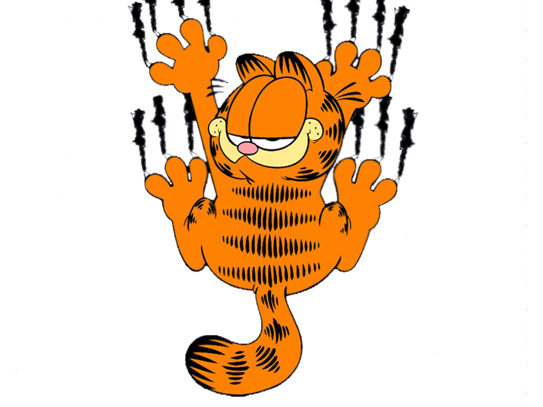
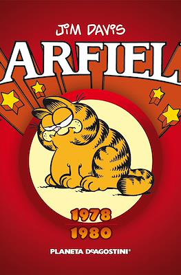
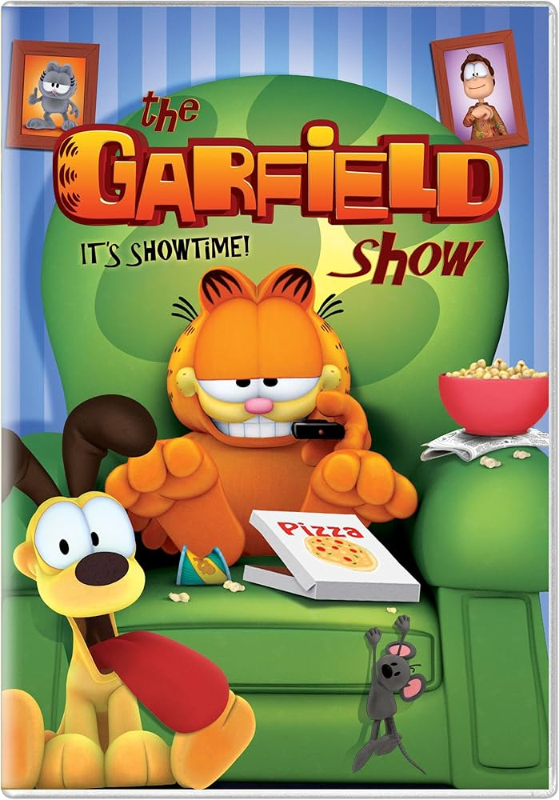
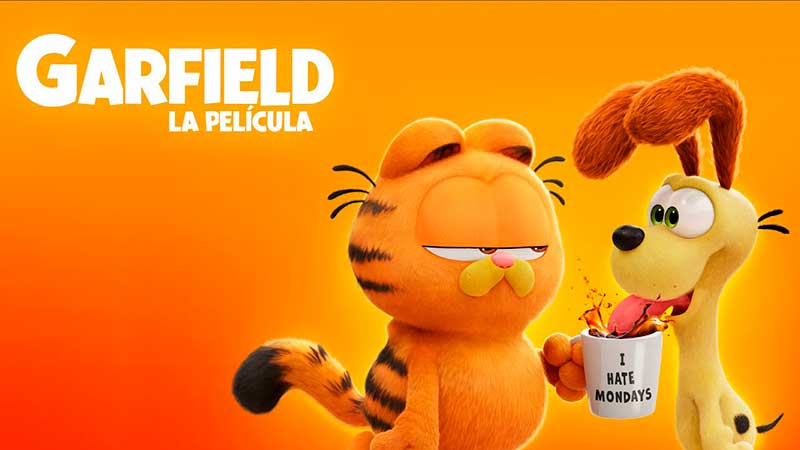

Aqui podrás encontrar algunas viñetas del comic de Garfield.
Comic
Aquí podrás ver un capitulo de la serie de dibujos animados de Garfield.
Serie
Aquí podrás ver el trailer de la pelicula de Garfield.
Película